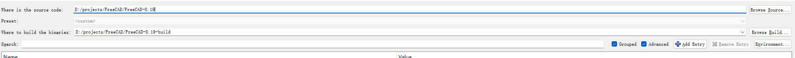
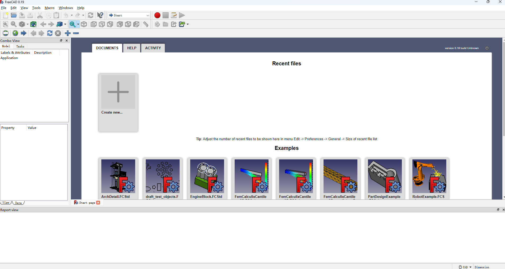

FreeCAD 编译 #
本文主要记录 FreeCAD 的一次编译过程。
准备工作 #
系统和主要用到的工具如下：
- 系统：windows 11 x64
- C++ IDE: visual studio 2017
- cmake 3.31.7
- 7-zip 解压工具
首先在 github 搜索 freecad 下载源码和 freecad 依赖的库文件。
- FreeCAD-0.19: https://github.com/FreeCAD/FreeCAD/releases/tag/0.19
- FreeCAD LibPack: https://github.com/FreeCAD/FreeCAD-LibPack/releases/tag/1.0
注意 freecad 和 libpack 需要对应的版本，上面的链接是 freecad 0.19 以及对应的 libpack。可以用 vs2017 进行编译。
下载 FreeCAD 和 LibPack 后解压，建议新建一个 FreeCAD 目录，将它们解压到这个目录下。并在这个目录下新建一个 build 文件夹。目录结构如下：
- FreeCAD
- FreeCAD-0.19
- FreeCAD-0.19-build
- FreeCAD-LibPack-1.0
cmake 生成 vs2017 项目 #
打开 cmake gui，指定 FreeCAD 源码目录以及 build 目录。

点击 configure，首次点击会弹出 dialog，选择 x64 平台，生成 vs2017 项目。
此时应该会报错，因为还没有配置 libpack 的目录，配置 FREECAD_LIBPACK_DIR 以及开启 BUILD QT5。
如果需要用 visual studio debug 模式调试，还需要勾选以下三个配置：
FREECAD_COPY_DEPEND_DIRS_TO_BUILD
FREECAD_COPY_LIBPACK_BIN_TO_BUILD
FREECAD_COPY_PLUGINS_BIN_TO_BUILD
配置完成后，此时进行 configure，如果顺利的话应该不会报错。configure 完成后，点击 generate。generate 完成后，打开项目即可。
vs2017 编译 #
选择 ALL_BUILD 项目，生成该项目，这个过程比较慢，耐心等待。
完成后，设置 FreeCADMain 为启动项目，运行项目，可能会报错缺少 VCRUNTIME140_1D.dll，我们可以在这里下载这个 dll，然后放到 C:/windows/system32/ 目录下，重新启动项目。
恭喜，大功告成！

参考 #
（完）